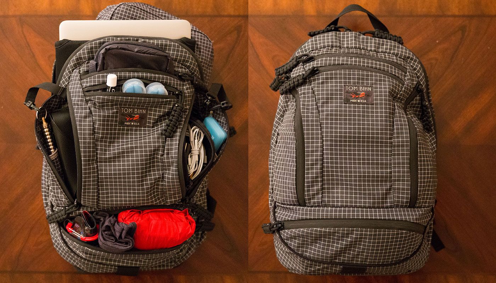
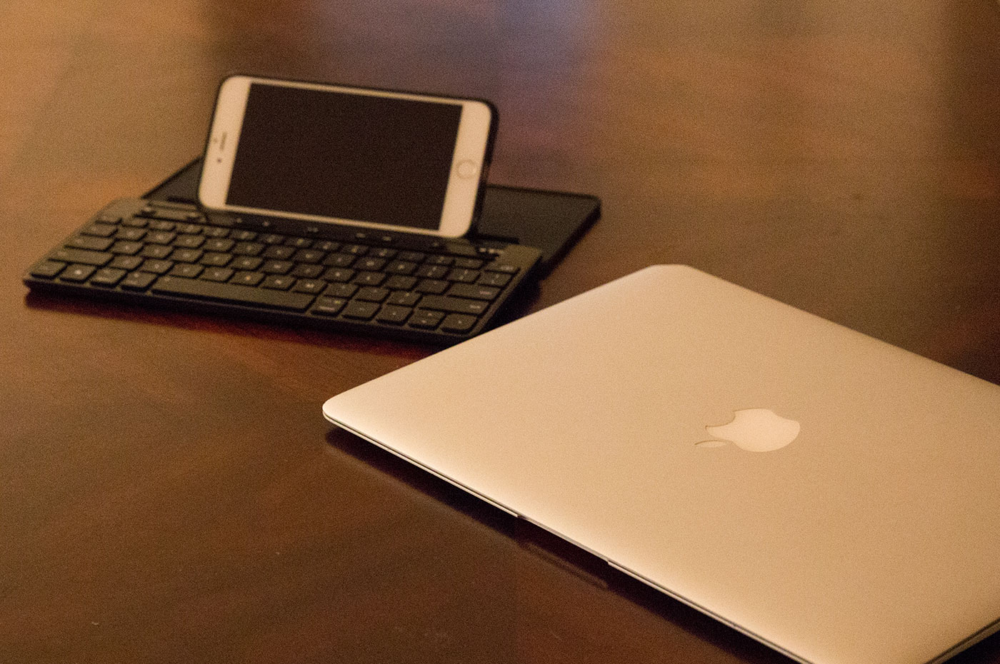
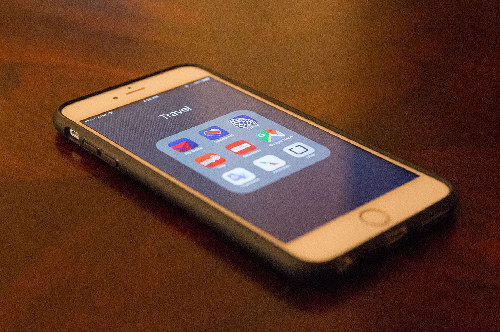

How to Pack Light:
The Complete Guide to Ultralight, Minimalist Travel

Hey there! This page covers my complete minimalist travel guide. I’ll share my exact system for packing light, my favorite pieces of ultralight travel gear, and my thoughts on why it is always better to travel the world with just one bag.
I have traveled to more than 25 countries so far. Along the way, I have slowly optimized and improved my packing list and travel strategy. Even if you’re not interested in traveling as light as I do, I think you’ll find this guide useful. My hope is that this packing list will help you eliminate the unnecessary items that we often drag around on our travels, but never actually use.
Before we dive into my full list, I think it is important to note that I began traveling long before I had any of the items listed here. You don’t need any of the items on this page to travel (although many of them will make your life easier). The only thing you need to travel is the courage to explore.
I. How to Pack Light
II. Minimalist Travel Gear
- Best Travel Wallet
- Best Travel Backpack
- Best Travel Laptop
- Best Travel Camera
- Best Travel Headphones
- Best Travel Accessories
III. The Best Travel Clothes
- Best Travel Jacket
- Best Travel Shirt
- Best Travel Pants
- Best Travel Shorts
- Best Travel Scarf
- Best Travel Sunglasses
- Best Travel Underwear
- Best Travel Socks
- Best Travel Hat
- Best Travel Gloves
- Best Travel Shoes
- Packing List
IV. Minimalist Travel Toiletries
V. Additional Items
I. The 3 Rules of Packing Light
You need less than you think you do. That’s true for travel, and it’s probably true in life as well. As a general rule, I believe we are better off packing less and trusting ourselves more. That said, I’m not interested in practicing minimalism to the point of limiting my joy or handicapping my travel experience. My goal is not to pack the least amount of things, but the optimal amount of things.
With this in mind, there are 3 rules that drive my ultralight travel philosophy.
- Carry less stuff. I strive to ruthlessly eliminate items that are not essential to my enjoyment on the road. In my experience, packing light allows me to spend more time focusing on the things that make travel great — the people, the places, the food — and less time worrying about what I’m carrying.
- Reduce weight, not usefulness. I refuse to carry things that are not useful. When faced with two useful options, I will select the one that is lighter or better designed. Whenever possible, I opt for items that have multiple uses because this reduces weight and complexity. I try to carry items and wear clothes that are flexible enough to cover a variety of situations.
- Optimize for comfort and design. After following the first two rules, I optimize each item for comfort and design. I’m not interested in wearing a 10-zipper pant or a 15-pocket travel sweatshirt. I want to wear clothes that I feel comfortable in and that look good. I’m not interested in melting deodorant into chapstick tubes in the name of packing light. I want to use everyday items the way I would normally use them. I don’t need many things, but I love the look and feel of each item I carry.
Alright, let me show you how I’m putting these three rules into practice. Below you’ll find an up-to-date packing list of my favorite items of travel gear.
II. Best Travel Gear
Wallet, keys, phone. If you just had to pick three things to take with you on a normal day, these items would be at the top of most people’s list. They should also be the first items you optimize for ultralight travel because you nearly always have them with you.1
Best Travel Wallet
Minimalist Wallet by Capsule – I have used this minimalist wallet every day for almost five years and I absolutely love it. It’s the best combination of slim profile, clean design, and practical functionality that I have found. It fits easily in my front pocket where it is safe and secure. It can hold bills of all sizes (USD, Euro, GBP, etc.), which makes it great for traveling in parts of the world where cash is heavily used. It has a front sleeve where you can place your most heavily used credit cards and an internal sleeve where you can store seldom used cards like your driver’s license, health insurance card, and so on. My biggest fear with the Capsule wallet was that bills would just slide out of the cash strap, but I’ve never had that happen. I own three different colors and the Blacktie is easily my favorite.
iPhone – I carry the largest iPhone size. I prefer the larger size because 1) increased screen real estate, 2) larger battery, 3) excellent camera. From a technical standpoint, there are many great phones available now. However, all of my other computers are Apple devices, and so I prefer the iPhone because it syncs seamlessly with everything else I own.
Incipio NGP iPhone Case – Most cases are too bulky for my taste or too thin to provide ample protection. This case offers the best of both worlds. It is very slim and doesn’t make the iPhone feel bulky, but it also provides good all-around protection. It also has a slight lip that extends above the edge of the iPhone screen, which reduces the odds of the screen getting cracked or scratched.
Schwab Bank debit card – This card automatically reimburses you for all ATM fees worldwide. This is a killer benefit because one of the most annoying things about accessing money while traveling is constantly paying ATM fees. You can get this card by simply opening a Schwab Bank High Yield Investor Checking Account, which is an online checking account that has no fees and no minimum balance. Additionally, I like to use this account exclusively for travel, which means that if I was ever a victim of ATM fraud, the rest of my money would remain safe.
Chase Sapphire Reserve credit card – The best travel credit card on the market, plain and simple. There are no foreign transaction fees, which means that you can use it anywhere in the world at no extra cost to you. The Sapphire Reserve earns 3x points on dining at restaurants around the world and all travel purchases like airfare, hotels, and trains. Even better, those points are actually worth something because the Chase Ultimate Rewards program allows you to redeem your points on a wide range of airline and hotel partners. To top it all off, Chase Sapphire Reserve customers get a free Priority Pass membership, which scores you access to over 900 airport lounges around the world. Most people avoid this card because on the surface it appears to have an annual fee of $450. However, the card automatically reimburses you up to $300 for travel, which means that as long as you’re planning on spending $300 on travel during the year, the annual fee is effectively $150, which is a total steal considering the perks. If you’re only going to get one travel credit card, get this one.2
American Express Business Platinum credit card – There are two reasons to get this card. First, it will give you and a guest free access to the American Express Centurion lounges, which are the best airport lounges in the world. The food is amazing. You can get a free massage or a manicure. You can take a shower. Access to the Centurion lounge makes flying much more enjoyable. Second, this card earns Membership Rewards points, which can be easily transferred to a wide range of airline and hotel programs. When you combine this card with the Chase Sapphire Reserve mentioned above, you’ll be earning the two most useful point currencies out there (Ultimate Rewards and Membership Rewards). Between these two programs, you’ll be able to redeem your points with nearly any airline or hotel. Many people are scared away from this card because it has a high annual fee of $450, but what most people miss is that you can earn back a lot of that quickly. For example, you’ll get a $200 airline fee credit, which automatically comes back anytime you buy an upgraded seat, food on the plane, pay for luggage, etc. Plus, the card comes with a personal concierge service (I used it to score tickets to Hamilton when the musical was completely sold out) and a bunch of other benefits. In my experience, the fee is effectively about $200, which is much more reasonable and a bargain for a frequent traveler.
Keys – I usually drive to the airport and I figure if my keys are making the trip anyway, I might as well make the most of them. On a single key ring, I carry my house, car, and mailbox keys. I also carry a DoohicKey multi-tool, which I prefer over other key ring tools because it lays flat. It can be used to open boxes, tighten bolts and screws, and pop bottles. Finally, I carry a tiny LRI Photon Freedom Keychain Light, which takes up virtually no space and can act as a backup flashlight in an emergency.
Passport – If I’m traveling internationally, I’ll carry my passport as well.
Best Travel Backpack

Tom Bihn Synapse 19 – More than anything else, the size of your bag determines how you pack. If you bring a bigger bag, you’ll fill it. If you bring a smaller bag, you’ll cut out the stuff that doesn’t matter. For me, the bag that offers the perfect blend of size and simplicity is the Tom Bihn Synapse 19. At just 19 liters, the Tom Bihn Synapse 19 is small enough to fit under my seat on any airplane, which means I never have to part ways with my gear. In fact, it’s light enough that I can carry it around fully packed without much hassle.
For example, the Synapse 19 was my only bag during a two-week trip to Morocco. One afternoon, I took the train from Marrakech to Casablanca and arrived about one hour before sunset. I wanted to take photos in the evening light, so rather than go straight to my hotel and drop my stuff off, I hopped off the train and walked around town. I wore the Synapse 19 the entire time, took photos while the light was beautiful, and went to the hotel a few hours later. Imagine doing that with a piece of carry-on luggage. What would I have done? Roll the bag all over town with one hand while holding my camera in the other? You can’t have that type of flexibility without an ultralight bag.
Backpack Organization

The portable size is just one feature of the Synapse 19. It’s the organization of the bag that really makes it worthwhile. You see, your luggage is the “home” for all of your belongings on the road. When you travel (especially internationally or to multiple destinations in one trip), you need a bag that keeps you organized.
Here’s how I divide my items within the Synapse 19:
- Main compartment – Clothes, laptop
- Upper center pocket – Toiletry kit, camera charger
- Lower center pocket – Ear plugs (2x), keys, chapstick
- Left pocket – Sunglasses, pens (2x), and Prometheus flashlight
- Right pocket – Cables, chargers, adapters, headphones, memory cards (4x)
- Bottom compartment – Rain jacket, Wool Buff, and sleep mask
The best travel backpacks allow you to keep the most frequently used items in the most accessible locations. When I’m sitting in the airport, I don’t want to dig through all of my clothes just to find my phone charger or sunglasses. With the Synapse 19, I’m able to store regularly used items in the outer pockets and use the main compartment to store things I won’t need until I get to the hotel.
Alright, let’s talk about the travel gear I pack inside this amazing bag.
Best Travel Laptop

12-inch Macbook laptop (optional) – You don’t always need a laptop while traveling, but this 12-inch Macbook is incredible. It’s so small and light! At the same time, it still has a full-size keyboard, which makes typing effortless. I’ve tried traveling with my phone and a mini-keyboard. I’ve also tried bringing a tablet. For me, it’s just so much better to have a fully functional laptop. Weighing only 2 pounds (0.9 kg), this laptop is the perfect combination of functionality and weight. I just toss mine inside the elastic, open-top pocket in the main compartment of the Synapse 19 backpack.
Best Travel Camera
It’s not necessary to carry a camera while traveling and many people find their smartphone to work just fine. However, I’m a photographer, so taking high-quality photos is important to me. While my camera setup is very lightweight compared to many professional photographers, I’m happy to carry some extra weight with my camera gear and get better photos because of it.
Canon 6D – After doing travel photography and street photography in over 25 countries, the Canon 6D is the best camera I’ve owned. It has nearly all the functionality of the 5D, Canon’s flagship model. At the same time, it weighs less and takes up less space, which makes it perfect for travel. It can deliver incredible photos in nearly any situation. Some of my favorite bonus features are the customizable pre-sets and the ability to send photos directly from the camera to my phone.
Canon EF 24-70mm f/2.8L II lens – If I could only travel with one lens, it would be this one. This lens has been a favorite of many National Geographic photographers for years because of its versatility. It is wide enough to take beautiful landscape images and it can zoom in close enough to create fantastic portraits. When combined with the 6D camera body, you have a powerful and versatile setup.
Canon EF 135mm f/2L lens – This is a fixed telephoto lens and is probably my favorite lens that I own. It shoots remarkable images, has incredible background blur (bokeh), and delivers that wonderful, compressed look you can only get with a zoom lens. There is a reason it receives nearly universal five-star reviews. Highly recommended.
Peak Design Leash camera strap – One of the reasons I prefer a backpack over rolling luggage is that it keeps my hands free. Having a good camera strap serves the same purpose. Before owning this camera strap, I would carry my camera in my hand all day, which not only restricted me to one hand, but also wore me out over the course of the day. With the Peak Design Leash camera strap, I can take a photo and slide the camera out of the way so that it hangs by my side or behind my back.
SanDisk Extreme Pro 128GB memory cards (4x) – Memory cards are the simplest and lightest way to store photos while traveling. I carry four 128GB memory cards and store them in a Ruggard Memory Card Case. I also upload the images to my laptop, so I have the photos stored in two places.
Best Travel Headphones
Bose QuietComfort 20 Acoustic Noise Cancelling Headphones – Good headphones are essential on the road. While testing many pairs, I fell in love with theses Bose noise cancelling headphones. Unlike most noise cancelling headphones, these are earbuds rather than over ear headphones. They pack down incredibly small, yet provide remarkable noise cancellation at the same time. Not only do they provide great sound, they are also great for erasing the drone of plane engines. I’ve actually started using them instead of ear plugs when I want to sleep on planes.
Best Travel Accessories

Anker PowerCore Fusion 5000 2-in-1 Portable Charger – This is the best portable battery charger I have used. There is one feature that makes the Anker PowerCore far more useful than the typical portable battery: it is a combination wall charger and portable battery. You can plug it into any outlet and it will begin charging your phone like a normal charger. Once the phone is fully charged, however, the Anker PowerCore will automatically begin charging its internal battery. Then you can toss it in your bag and charge your devices anywhere. The biggest hassle with portable batteries is remembering to charge them (a spare battery that is empty is useless), but if you use the Anker PowerCore as your daily charger, you’ll always have a fully charged portable battery whenever you need.3
Kikkerland UL03-A Universal Travel Adapter (2x) – I didn’t know this until I began traveling internationally, but there are many different outlet styles around the world. You need an adapter to fit your North American plugs into European or Asian or South American outlets. It seems like an easy problem to solve, but most adapters are heavy and bulky. This added weight causes many adapters to gradually slide out of the outlets you plug them into. The only adapter I’ve found that keeps a low profile and consistently stays into outlets of all styles is the Kikkerland UL03-A Universal Travel Adapter. I carry two of them.4
Bucky 40 Blinks sleep mask – When I was a kid, I always thought people who wore sleep masks were weirdos. Now, I think they are geniuses. Getting good sleep, especially on long international trips, is essential to having a good time while traveling. I wish I had bought a sleep mask years ago. It is now one of my most essential pieces of travel gear. After testing a variety of sleep masks, I think the Bucky 40 Blinks sleep mask is the best. In my opinion, it is much more comfortable than more expensive sleep masks.
Hearos Extreme Ear Plugs (2x) – Good ear plugs are one of the most underrated pieces of travel gear. I can pop these in my ears and pull the sleep mask over my eyes and take a nap in many places where sleep would otherwise be impossible. I also find them useful for cutting out the background noise on airplanes when I’m trying to get work done. I pack two pairs and store each set inside a MUJI earplugs case in the top center pocket of the Synapse 19.
Prometheus Beta-QRv2 flashlight – The Prometheus Beta-QRv2 is the best travel flashlight in the world. Why? First, it is remarkably small and light (imagine a pen in width, but only half the length). Second, it has two useful settings (high and low) and it can stand on its end (like a lamp). Third, it runs on one AAA battery. I use Eneloop rechargeable AAA batteries, but if you run out of juice on the road, you can buy any AAA battery. Fourth, its light produces nearly perfect color rendition. Finally, it has a quick release mechanism that makes it super easy to take on and off your key strap.
Glif Tripod for iPhone – I use this nifty little tripod to keep my iPhone steady during videos and to take group photos using the self-timer. Plus, you can set it up in a different position and it becomes a stand, which makes it easy to watch or read anything on your phone—like a movie on a long flight.
Headphone Splitter – It’s nice to share a movie or TV show with a friend during a long day of travel. I keep the headphone splitter curled up inside the Tom Bihn Q-Kit in the right pocket.
1-foot USB Lightning cable – I use this to charge my iPhone. It plugs into either the Fluxmob or the outlet adapter. Most USB cables are much longer than they need to be. After more than a year of use, I’ve decided one foot is the perfect length for a phone charger cable.
6-inch USB Mini cable – This little 6-inch USB mini cable is the smallest one I could find. I use it to transfer photos between my Canon 6D camera and my laptop. I keep this tiny guy tucked away inside the Tom Bihn Q-Kit in the right pocket.
6-inch USB Micro cable – Another super small cable. This one can be used to charge my headphones or any other device that takes a micro plug (many phones and electronics). This cable also spends most of its time inside the Tom Bihn Q-Kit.
Griffin PowerJolt Flat USB to Car Charger Adapter – This is becoming a hard-to-find item. It is the smallest USB to car charger adapter I have found. I rarely have to use it, but it can be a lifesaver when you need it. I keep this adapter stored in the Tom Bihn Q-Kit as well.
uni-ball Jetstream Bold Point pen (2x) – Let’s be honest: getting this pen isn’t going to change your life. For years, I used whatever pen was around and things worked out just fine. However, there are actual people who are pen experts and they all swear this pen is the best value on the market. I thought it was all hype, but after using it for two days, I was sold. It is an excellent pen for the money and it has the added benefit of using a special ink that soaks into paper and makes it more resistant to forging and theft when used to write checks and sign documents. Not a life-changer, but still pretty sweet. For what it’s worth, I prefer the 1.0mm bold point version in black ink.
Tom Bihn Q-Kit – I use the Tom Bihn Q-Kit to keep all of my cords tucked away in a neat little pouch. It also clips into the O-ring inside the right pocket of the Synapse 19, which makes it less likely my cables and adapters fall out of my bag.
III. Best Travel Clothes
Note: Given that I’m a man, I’m only reviewing men’s travel clothing.
Most pieces of specialized travel clothing are not worth the money. The features that get people to buy travel clothes are rarely used in the real world. If you have a good bag and a simple packing list, then you don’t need a jacket with a built-in pillow or pants with 11 pockets. Your wallet, phone, and passport can go in your pockets. Everything else is better off in your bag.
So what travel clothes are worth investing in? In my experience, two types.
The first type are items that sit close to your skin like socks, t-shirts, and underwear. These pieces of clothing soak up the majority of sweat during the day. Having quality items made out of wool or similar odor-resistant fabrics can make your trip more pleasant for everyone.
The second type are items that handle the bulk of bad weather and also tend to take up space like jackets, hats, and scarves. If your rain jacket leaks, you’re wet and unhappy. If your winter jacket is overly big and cumbersome, it can be a huge pain to carry it everywhere. If you don’t have a versatile hat and scarf, then you’ll end up feeling cold on planes, on hikes, and on windy city streets.
In my opinion, these items are worth the extra money. If you feel like optimizing further, then there are certain pants and shirts that will make life easier. I’ve included these items below, but they aren’t required by any means. With that in mind, here are the best travel clothes I have found so far.
Best Travel Jacket
Patagonia Nano Puff Jacket – This has become my go-to jacket. When you combine this insulated jacket with proper layering, you can wear it comfortably down to 30 degrees or so (0 degrees Celsius). It is very lightweight and can easily be packed down into the main compartment of my bag. If it’s windy, rainy, or snowy, you can use one of the rain jackets mentioned below as a shell on top of this jacket to create a warm, waterproof combination. I think the Patagonia Nano Puff Jacket offers the best combination of design and functionality. Plus, it comes in a wide range of colors. Note: this jacket is expensive, but you can regularly find deals for 20 to 30 percent off.
Patagonia Nano Puff Vest – I love this vest. It is just like the jacket mentioned above (but without sleeves, obviously) and it is a great fit for climates where it might be cool at night, but hot during the day. And because it’s a vest, it packs down even smaller than the jacket version.
Outdoor Research Helium II Jacket – This is an amazing ultralight rain jacket. It packs into itself and can fit into the palm of your hand. I toss mine in the bottom compartment of the Synapse 19 and it doesn’t even take up half of the compartment. Despite its thin fabric, it is very waterproof. I’ve worn it in 4 straight hours of rain and stayed dry. The hood is also surprisingly well-shaped and effective at keeping water off your face. My only complaint with this jacket is that it only has one chest pocket and no hand pockets.
Marmot Precip – While not as small and lightweight as the Outdoor Research Helium II mentioned above, I really like this jacket. The two advantages it has over the Helium II is that it has hand pockets and it is far more affordable.
Best Travel Shirt
Smartwool NTS Mid 250 long-sleeve – This is the most versatile shirt I own and I really can’t say enough good things about it. You can easily dress it up as a sweater over a button-down shirt or wear it casually on its own. It’s made of a surprisingly soft wool fabric and comes in a variety colors. Unlike many wool shirts, it lasts time after time and wash after wash. It is easily the best long sleeve shirt I have found, not just for travel but for daily life as well. It comes in both crew neck and quarter zip styles.
Icebreaker Anatomica Shirt – If we’re being honest, normal t-shirts will do just fine for most travels. However, if you’re looking for something that will dry out quickly and resist odor on the road, then this shirt is definitely recommended. I was very impressed with how this shirt performed while hiking through Peru. It’s the only shirt I’ve found that actually does resist odor (mostly, I think, because it dries so quickly). It also makes a fantastic base layer because it is long enough to tuck in under longer layers. My one gripe with these shirts? Contrast stitching. It’s the worst. Thankfully, there are a few colors I can recommend because they have normal stitching or contrast stitching that closely matches the shirt color: Jet Heather, Midnight Navy, Kona, and Ivory.
Mizzen+Main performance dress shirts – The only button-down shirts I’ve ever owned that 100 percent, absolutely, do not wrinkle. You can throw them in your bag like any normal shirt and they require zero ironing. They accomplish this by using a stretchy, high-performance fabric (think: a combination of Under Armour fabric and dress shirt style). I used to avoid wearing button-down shirts because they start to pull and tug and feel restrictive as the day goes on, but with the awesome stretchy fabric of these shirts I can easily wear them all day without fatigue. The only downside is the high price tag, but Mizzen+Main gave me a discount code, which you can use for “$50 Off Three Dress Shirts.” Just enter CLEAR3 at checkout.
Best Travel Pants
I recently did a complete review of the best travel pants on the market. I looked at nearly everything. Dress pants. Jeans. Rock climbing pants. Soft shell pants. Everything from basic cotton to finely spun wool to high-tech fabrics. After all of this testing, I’m confident in saying that Outlier makes the best pants on the market not just for travel, but for everyday wear as well.
Outlier Slim Dungarees – The best overall pant in the world today is the Outlier Slim Dungarees. They have a comfortable two-way stretch and are easy to hike in all day. They are water resistant. . Coffee and beer will wipe away without a stain. And despite their ruggedness, you can dress them up easily. They drape fairly well and look classy with dress shoes. I have worn them on stage for multiple keynote speeches. They are my preferred pant in nearly any situation.
The Slim Dungarees have a number of simple features that make the pants very functional while traveling. For example, they include a small coin pocket. Usually, this pocket is useless because I never carry change, but when you’re on the road and the cashier hands you a bunch of coins in a foreign currency, it’s really nice to have a secure place to store them so you don’t have loose change bouncing around in your pocket all day.
The only negative thing you can say about these pants is that the fit is a bit slim for some people’s taste. (I had to order one size up from my usual.) If the Slim Dungarees fit you, then you will be in love with them. If you’re above 6’2″ tall (188cm), I suggest ordering the Extra Long version and hemming as needed.
Best Travel Shorts
Patagonia Stretch Wavefarer boardshort – These are my favorite boardshorts. They stretch, which makes them comfortable to wear all day. I wore them for three straight days in hot and humid Vietnam and they performed well the entire time. They come in a range of colors, and as boardshorts, they are just long enough to break at the knee without hindering your ability to surf, swim, and play on the beach.
Best Travel Scarf
Wool Buff – The Wool Buff is one of my favorite pieces of travel clothing. This simple tube of wool fabric can be adjusted to act as a scarf, a ski mask, a watch cap, a bandana, and more. (I typically use it as a scarf or as a watch cap.) It’s great to have this extra layer to throw on when you’re feeling cold while traveling.
Best Travel Sunglasses
Ray Ban Caravan or Ray Ban New Wayfarer – Most sunglasses will fit easily into the left pocket of the Synapse 19. I only pack one, but I own both of these classic styles from Ray Ban.
Best Travel Underwear
ExOfficio Give-N-Go Boxer Brief – The best travel underwear you can buy. I’ll leave it at that.
Best Travel Socks
I am completely addicted to wool socks. They keep my feet dry, they are odor resistant, and they last a long time. I don’t even own any cotton socks anymore.
Darn Tough Standard Issue Socks – I’ve experimented with many wool sock brands, but Darn Tough makes the best socks I have ever tried. Their Standard Issue sock is a great everyday pair that can be used with a business casual look in the office or jeans and a t-shirt.
Darn Tough No-Show Socks – Another Darn Tough offering. These wool socks are great to wear in hot environments and during exercise.
Darn Tough Mountaineering Socks – These are my favorite heavyweight wool socks. If you are traveling somewhere cold, I would bring these socks without a second thought.
Best Travel Hat
Arc’teryx Rho Wool Beanie – This wool beanie packs down so small that I often forget that I have it. You can also pair this hat with the Wool Buff mentioned above to create a two-layer hat that is pretty warm. The one downside is that it is expensive, but I find that I use it frequently enough to justify the cost.
Wigwam Wool Watchcap Beanie – This heavyweight wool hat is incredibly warm and resists odor without making my head feel itchy. It is also remarkably affordable. In my opinion, it is better than many hats that are three or four times the price.
Best Travel Gloves
Icebreaker Sierra Gloves – I’m surprised by how much of a difference these lightweight gloves make. I’ve worn them in temperatures as low as 21 degrees (-6 degrees Celsius), but that was a bit cold. I would recommend them for any weather above 32 degrees (0 degrees Celsius).
Best Travel Shoes
Shoes – Shoes are easily the biggest challenge when it comes to packing light. If you want to travel light, then you are probably only packing one pair of shoes. And if you only pack one pair, how do you select one that is reasonable for hiking in the woods and going out to a nice dinner?
I’m in the process of testing a variety of boots and shoes, but I don’t feel ready to make a recommendation just yet. I’ll update this list once I’ve made a pick. In the meantime, if you know of a great boot or shoe for travel, then just let me know.
That said, I do feel comfortable making one recommendation.
L.L. Bean Boots (Men’s | Women’s) – The only pair of boots I can recommend without hesitation is the original L.L. Bean Boots (sometimes called Duck Boots). They are lightweight compared to other boots. They are essentially waterproof. They contain no metal, which means you can wear them through airport security (if you have TSA Precheck). They can be comfortably worn with lightweight or heavyweight socks. And, unbelievably, the fashion gods approve of them and you’ll often see people wearing them purely because they like the style.
They are probably the single most fashionable and functional boot around. That said, one thing these boots are not good for is extended hiking. They work just fine for short hikes, but anything more than a few hours and you’ll probably want a proper hiking boot.
Packing List
Base Package – Temperature range: 45 to 85 degrees Fahrenheit / 7 to 30 degrees Celsius. This is what I pack most of the time.
- 1 pair shoes / boots
- 3 pairs of boxer briefs
- 3 pairs of midweight wool socks
- 2 short sleeve shirts
- 2 long sleeve shirts
- 1 pair of pants
- 1 pair of shorts / swimsuit
- 1 belt
- 1 rain shell
- 1 lightweight wool buff
- 1 pair of sunglasses
- Optional: 1 lightweight down vest
- Optional: 1 watch
- Optional: 1 wide brim hat
Cold Weather – Temperature range: below 45 degrees Fahrenheit / 7 degrees Celsius. When traveling somewhere cold, I pack everything in the base package with the following adjustments.
- Switch 2x midweight socks for 2x heavyweight socks
- Switch down vest for down jacket
- Add 1 pair of lightweight gloves (in pockets of down jacket)
- Add 1 lightweight wool hat (in pocket of down jacket)
- Add 1 long-sleeve shirt (3 total)
- Add 1 heavyweight wool hat
- Add 1 pair of long underwear / thermal tights
Hot Weather – Temperature range: above 80 degrees Fahrenheit / 30 degrees Celsius. When traveling somewhere hot, I pack everything in the base package with the following adjustments. Note: even in hot environments I like to pack long sleeves and pants to protect from bugs and mosquitos. Also, airplanes can be cold.
- Switch 2x midweight socks for 2x no show socks
- Add 1 pair of shorts / swimsuit
- Optional: 1 pair of sandals
That’s it! In rare cases I’ll pack specific gear as needed: ski pants, heavyweight snow gloves, etc.
IV. Minimalist Travel Toiletries
Minimalist Travel Toiletries

MUJI Hanging Travel Case (small) – Of all the items on this packing list, this was the hardest one to find. Most toiletry kits are way too big for my needs. After many failed attempts at customizing other bags to work for this purpose, I finally found this small hanging bag designed by MUJI, a Japanese company. It is small enough to slide into the top center pocket on the Tom Bihn Synapse 19.
Here’s what I include in my toiletry kit.
- Fuchs travel toothbrush
- Flossers inside a MUJI 12 x 8.5cm clear case
- Gillette Fusion Proglide razor
- Chapstick
- Neutrogena Dry-Touch Sunscreen SPF 100
- Nail clippers
- Tweezerman tweezers
- Q-tips cotton swabs
- Travel-sized toothpaste
- Deodorant
Minimalist Travel First Aid Kit
I like to travel with a minimalist first aid kit in my bag. I follow a simple rule to keep me from packing every medical treatment known to mankind: Pack what you actually know how to use. If you wouldn’t stitch up your own wound while you’re at home, then don’t bother packing sutures and needles for your trip.
I know this may come as a shock, but they do have hospitals and pharmacies in other countries. There’s no reason to act like you’re going on a 1,000-mile journey through the Amazon when you’re heading to Europe for two weeks.
Here’s what I include in my first aid kit.
- MUJI clear case
- Advil packets (5x)
- Claritin packets (3x)
- Imodium packets (2x)
- Polysporin packets (2x)
- Regular bandaids (4x)
- Butterfly bandaids (2x)
- Blister pads (2x)
- Bug repellent wipes (2x)
- Optional: Diamox (altitude sickness)
- Optional: Ciprofloxacin (antibiotic)
V. Additional Items
Optional Travel Gear
A good book – Long flights and lots of waiting time make your travels the perfect time for reading. Of course, because I’m a fan of packing light, I prefer audiobooks over physical books when it comes to travel. Either way, if you want some good reading suggestions, take a look at my recommended reading list and book summaries page.
Vapur Water Bottle – It’s fairly easy to find bottled water in most places, but if you’re going to carry a water bottle, this one would be my pick. It can roll up into a very small profile and the design allows the bottle to stand when it’s filled with water. Plus, it can clip onto a belt loop or backpack strap.
Kershaw Skyline Pocket Knife with G-10 Handle – For me, this pocket knife is as good as it gets. It is very lightweight and has a clean design. The blade is a practical size, can be opened with one hand, and locks automatically, which makes it safer to use. The built-in clip makes it easy to store and the slim profile means I barely notice it in my pocket. I rarely travel with it because you can’t carry knives through airport security, but when I think about my favorite gear, this pocket knife is near the top of the list.
Leatherman Wave – I received a Leatherman Wave for Christmas when I was twelve years old. It might be the best Christmas gift I have ever received. Despite decades of use, it still looks nearly brand new and works perfectly. I can’t recommend it more highly, and I couldn’t imagine using a different multitool. Like the knife mentioned above, I rarely travel with this because you can’t take it on a plane, but it’s still one of my favorite pieces of gear at home and on road trips.
Best Travel Apps

There are a variety of smartphone apps that I rely on while traveling.
American Airlines, Delta, Southwest, United – I use these airline apps to check in and download my boarding passes before I get to the airport.
Google Maps – The best maps app available.
Uber / Lyft – The best way to get around when you need a ride.5
Yelp and TripAdvisor – I love food and finding great restaurants is one of my top priorities once I land in a new city. In my experience, Yelp is the best app for finding great restaurants in the United States while TripAdvisor is better if you’re traveling internationally.
LoungeBuddy – I use LoungeBuddy to find the best airport lounges in whatever airport or terminal I am currently in.
Google Translate – This app is remarkable. With Google Translate, you can point your phone at any block of text in another language and the app will translate it into your language (English, in my case) directly on your screen.
Kayak – Kayak is my preferred search engine for finding great prices on flights and hotels.
Google.com/ncr – This is a hack for your laptop. If you’ve ever traveled to a different country and used google.com, then you may have noticed that you were sent to the local Google homepage for that country. For example, if you’re traveling in France, you will automatically be redirected to the google.fr page. I find this to be annoying because Google will often return search results in the native language (French in this example). The solution is to set your homepage to google.com/ncr, which stands for “no country redirect.” You will no longer be redirected to the local version of Google, regardless of where you are in the world.
Acknowledgements
Before I finish, I want to thank a few people.
- Tynan – Tynan inspired me to write this entire guide after I noticed the popularity of his annual series of gear posts. He was also the first person to point me toward the Tom Bihn Synpase 19, the bag at the centerpiece of my ultralight travel strategy. Some of the smaller items I’ve picked up thanks to him include the Griffin USB adapter, Kikkerland Travel Adapter, and the 40 Blinks sleep mask.
- Leo Babauta – Leo is a minimalist in all ways and his writing helped inspire my philosophy of living with less, both on the road and at home.
- Jodi Ettenberg – Jodi has a wonderful list of resources for world travel on her site, and she was the one who inspired me to start carrying a first aid kit. My version is minimal (of course), but it has been very useful.
- Ryan Delk – Ryan was the one who finished my search for a toiletry kit that was small in size, but big in organization. I’ve loved the MUJI Hanging Travel Case ever since he recommended it to me.
- John Shultz – John, the man behind the famous Minimalist Baker brand, shared the no-ATM-fee Schwab bank strategy with me. What a guy.
That concludes my ultralight packing list! I hope you found this guide and packing list useful. Thanks for reading and happy travels.
In fact, we could make an (extreme) argument for why these items are all you really need while traveling. With your wallet, keys, and phone, you can buy things you need, get into the place you are staying, and communicate with others. Most of the tasks you face on a daily basis can be solved with those three things.
If you pair this card with the Chase Freedom Unlimited, then you have one of the best possible two-card spending options. Use the Chase Sapphire Reserve for dining and travel purchases to earn 3x points and the Chase Freedom Unlimited to earn 1.5x points on everything else. It’s the simplest way to rack up the most points through your normal spending. Plus, the Chase Freedom Unlimited has no annual fee.
I also carry the basic outlet-to-USB adapter that comes with any phone. I rarely use it, but it’s small and acts as a backup in case the Anker PowerCore dies on the road.
Hat tip to Tynan on this one. I never would have found this without his recommendation.
I still frequently use cabs when traveling internationally where Uber isn’t available. Pro tip: whenever possible, negotiate the price of your trip before you get in the cab. Occasionally cabbies will take advantage of tourists and demand outrageously high prices once you have reached your destination.